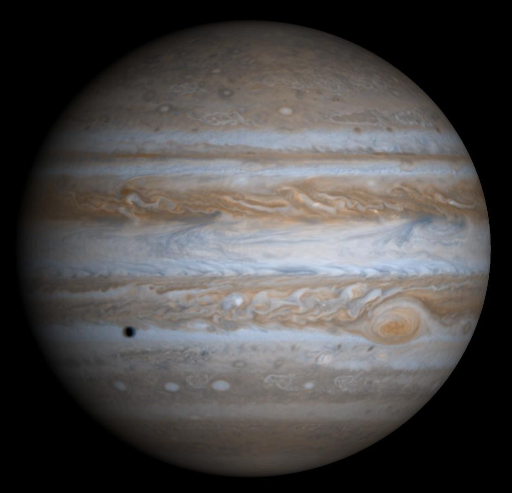

Jupiter, the fifth planet in the Solar System

Jupiter
Jupiter is the fifth planet from the Sun and the largest planet in the Solar System. It is a gas giant with mass one-thousandth of that of the Sun but is two and a half times the mass of all the other planets in the Solar System combined. Jupiter is classified as a gas giant along with Saturn, Uranusand Neptune. Together, these four planets are sometimes referred to as the Jovian or outer planets. The planet was known by astronomers of ancient times. The Romans named the planet after the Roman god Jupiter.


Orbital Characteristics
- Aphelion
- 816 520 800 km
- Perihelion
- 740573600 km
- Orbital period
- 4332.59 d
- Average orbital speed
- 13.07 km/s
Physical Characteristics
- Mean radius
- 69911±6 km
- Mass
- 1.8986×1027
- Surface gravity
- 24.79 m/s2
- Axial tilt
- 3.13°